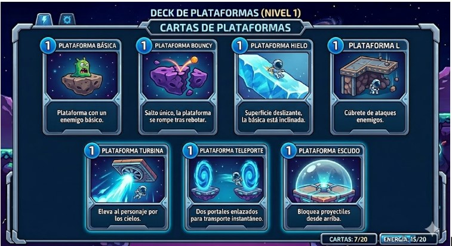
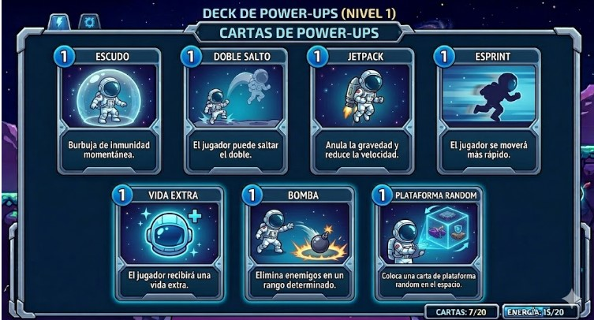
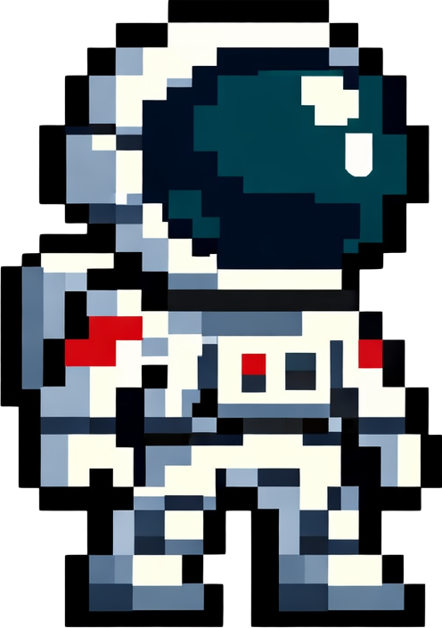

HyperJump
Sumérgete en un innexplorado mundo y ayuda a Astro a recuperar la comunicación con la Tierra.
Accede a tu cuenta para jugar
HyperJump es un juego interactivo de plataformas, en dónde deberás construir tu camino por un
inexplorado planeta.
Podrás usar cartas para colocar plataformas y ser capaz de sebrevivir.
De igual forma, podrás activar habilidades adicionales para completar tu objetivo...
Reestablecer la comunicación con tu querido planeta, La Tierra.
¿Cómo Jugar?
Movimiento
¡Viaja por los niveles con controles sencillos!
Movimiento a la Izquierda: Con la tecla "A" o la Flecha izquierda.
Movimiento a la Derecha: Con la tecla "D" o la Flecha derecha.
Salto: Con la tecla "W", la Flecha superior o "Espacio".
Uso de cartas
¡Utiliza tus cartas para avanzar por los niveles!
Cartas de plataforma: Selecciónala con "los numeros del 0 al 6" Estos avanzan de derecha a izquierda.Para colocarla se debe usar el boton"Click Izquierdo
Cartas de power-up: Seleccionala con "los numeros del 7 al 9" despues presiona la tecla "P" para usar el powerUp selecionado.
Mejora de cartas
Al inicio de cada nivel puedes seleccionar un powerup o una plataforma con las teclas mencionadas arriba y mejorarlas. Si quieres mejorar una plataforma seleccionala y utiliza la tecla "U" . Si quieres mejorar un powerUp seleccionalo y utiliza la tecla "I"
Mejora de cartas: Arrastra la carta a la Casilla de mejora.
Plataformas y Powerups


Historia del Juego
Con el avance de la humanidad, la calidad de vida de los humanos alcanzó un límite sin precedentes.
Todos vivian dignamente en la reminiscencia de lo que algua vez fue un planeta de desigualdad.
Pero, un nublado y tormentoso día...
"¡Presidente, lo que le digo es algo serio! ¡Le advertí que esto sucedería! ¡Y ahora... ya no
hay mucho que hacer..."
Un equipo de cientificos había descubierto una enorme falla sobre el Trópico de Cáncer, la cual se
extendía desde México hasta China. Esta falla habría sido provocada por la minería sin control a lo
largo del Océano Atlántico.
Despúes de innumerables reuniones entre los líderes mundiales y personal especializado en el tema,
se llegó a una conlcusión, una que nadie quería aceptar...
"Atención ciudadanos del mundo, como seguro sabrán, enfrentamos un problema global, uno que podría
terminar con todo lo que conocemos. Es por eso que el día de hoy nos reunimos, para dar comienzo a
la misión "Elpis", cuyo objetivo, explorar el espacio en búsqueda de un nuevo hogar."
Todos estaban entusiasmados por los avances que se lograron para esta misión. Se construyó una nave
capaz de resistir al hostil universo, diseñada para durar años y años, pues el planeta al que se
apuntaba, "El Paztizal", se encontraba... un poquito lejos.
Un astronauta, la misión más importante que alguna vez hubiera existido, y una humanidad esperanzada...
¡Juega ahora para conocer más!
El héroe

Astro
Frédéric Spes, más conocido por todos como "Astro", es el hombre encargado de instalar la primera base extra planetaria, sentando las bases para salvar a la humanidad.